or
or  to navigate
to navigate
Tip: Rotate to landscape view for a better experience
Quick aside #1: So, are you wondering how we'd work together?
Well then, I've got you covered.
I don't think I'm a rockstar.
I'm pretty sure I'm not a ninja.
I'm certainly not a unicorn.
My superpowers are much simpler: Authenticity, honesty, and transparency.
To be happy, productive, and impactful at work, I need...
...to believe in a purpose that drives me to motivate myself to make my biggest impact every day.
...to experience leadership in action. (Managers and leaders are not synonymous, by the way.)
...to have the opportunity to pursue a challenging and ambitious mandate.
I have a simple two question test
to measure happiness.
#1. Am I inspired by the leadership culture?
That is, does it value purpose over urgency?
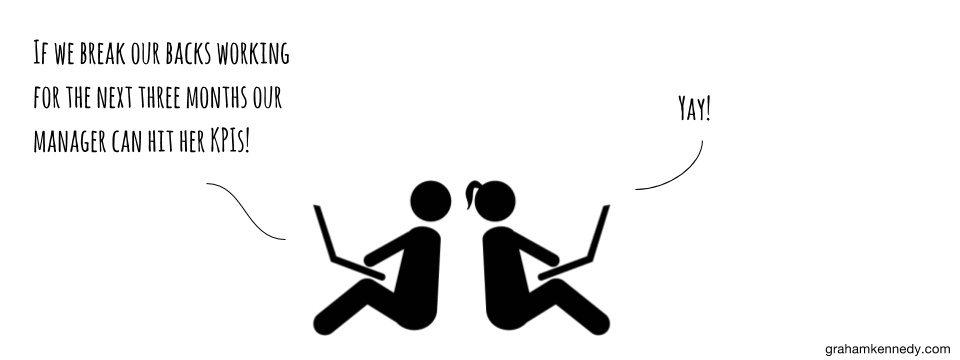
#2. Does the job scare me?
That is, am I gonna get my ass kicked worse today than yesterday?
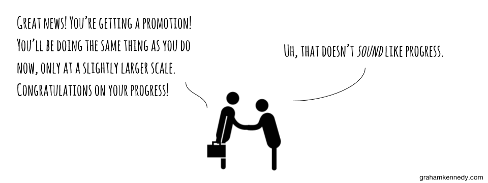
But aw lawdy, there are some things that I really don't like.
I have little respect for people who brag about working long hours. It's not a sign of commitment—it's a sign of poor time management.
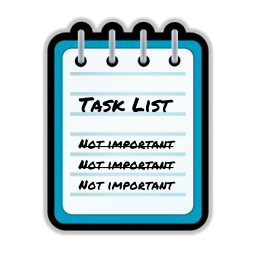
I have even less respect for "busy" people. Outsource, ignore, de-prioritize, or automate rote tasks. Focus on high impact work only.
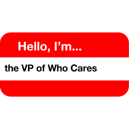
And I loathe job titles. In the end, we're all just team members.
Mindfulness is my mantra.
"A mental state achieved by focusing one's awareness on the present moment."
Quick aside #2: My storytelling style is a little unusual.
So I've enlisted a few friends to help meow-t.
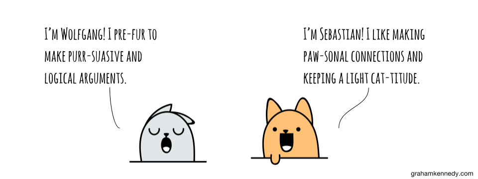
Outcomes
over Outputs
Celebrate attitude, reward impact.
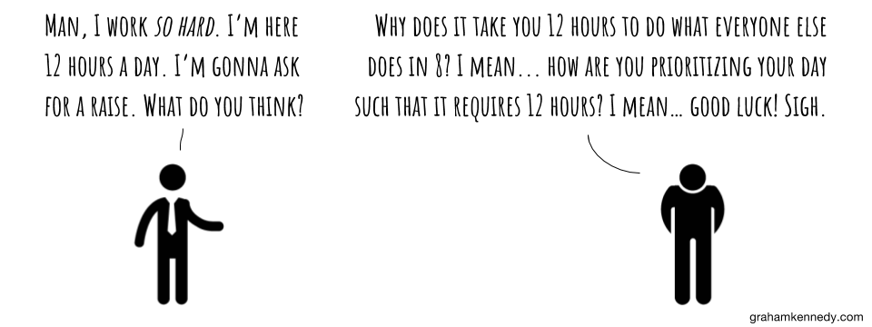
If your job is output focused,
there's a robot just waiting to take it over.
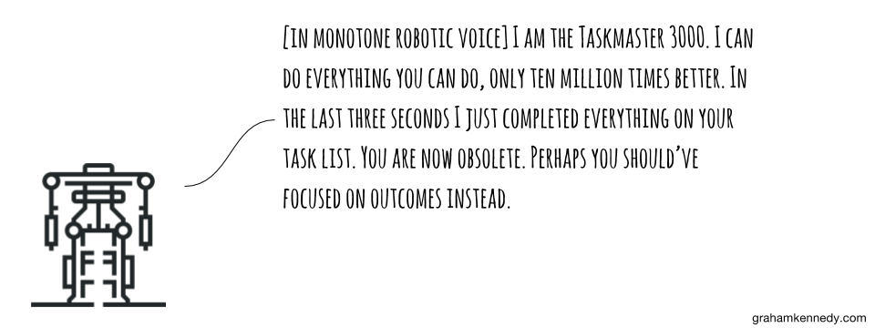
Outputs still matter sometimes.
But they're not the objective, they're just the means to the end... and the means again.
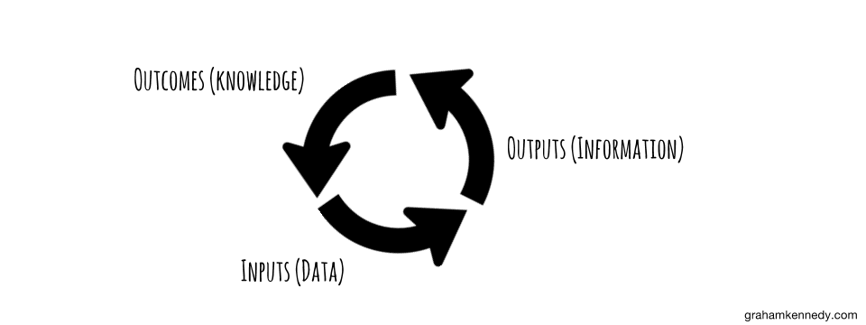
Outcomes aren't difficult to define.
Just focus on the why.
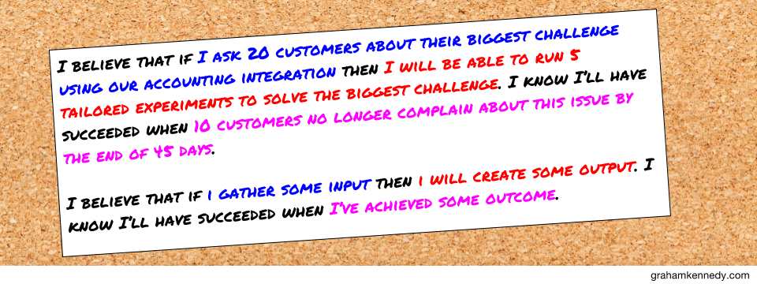
Outcome focused people evangalize and practice...
...aligning their outputs to the company's vision.
...crushing meaningful success goals.
...the why. (Outputs are the what.)
Products
over Features
Product management
ain't rocket science.
But it is hard.
First and foremost, you're a problem solver.
You're just wearing a product manager's uniform.
Before building anything, you should understand your market.
An early step is to identify your Ideal Customer Profile (ICP).
“Ultimately, you should think of your ideal customer as the customer type that, over a clearly-defined time frame, you will dedicate Sales and Marketing Resources to acquire.”
If your sales team asks for features that your ICP doesn't care about,
you've got a misalignment in incentives, marketing, and vision.
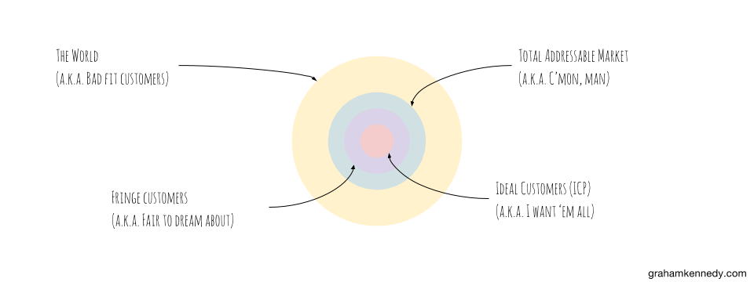
Remember, you get to choose your good fit customers.
Bad fit customers drive enormous non-obvious ongoing hidden costs.
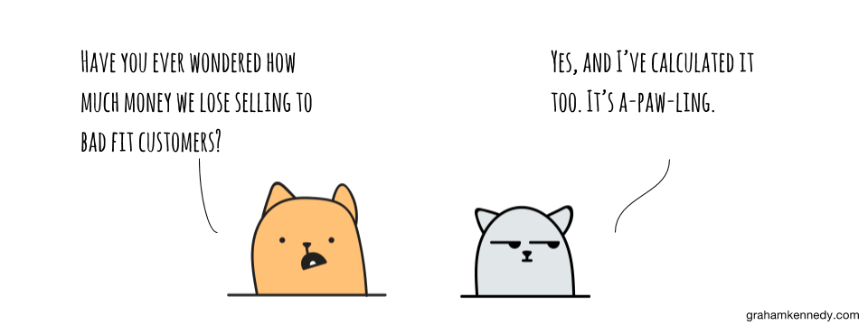
Good fit customers bring all the benefits.
Good fit customers have...

lower churn...
fatter margins...
higher average revenue per account...
and more impactful referrals.
Why build for a customer that you won't target?
You'll end up just watering it down for the customers you really care about. Depth over breadth.
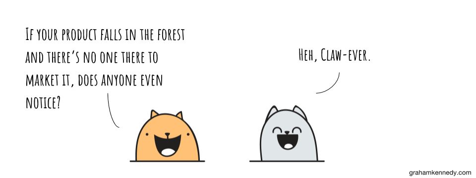
Keeping it simple is hard.
And please don't make the settings page
the most complex page in your app.
Don't be the best
at being average.
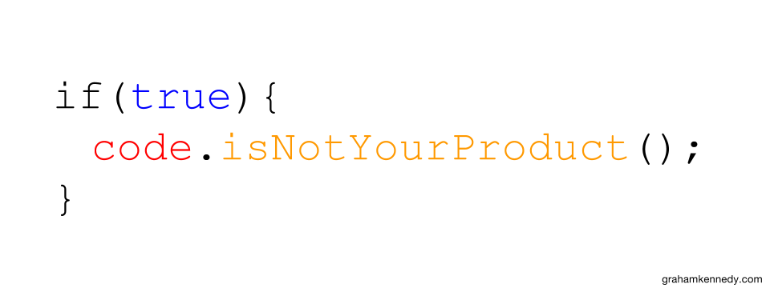
"Your product is
your business model."
Ash Maurya
When I'm trying to figure out if my ideas can gain traction,
I like to use a few approaches.
Lean canvas boards help drive clarity and understanding around the challenge.

Running a 5 Whys exercise to get to the root cause of the biggest challenge I'm trying to solve often uncovers incredible insights.
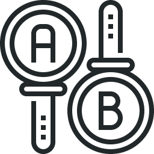
Sometimes I start by writing all of my assumptions as an experiment.
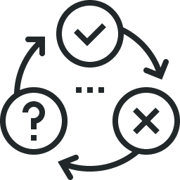
When in doubt, I try to go as lean as possible. I'll ask myself, “What's the fastest and cheapest way to push my hypothesis to fail?”
Few things are better than simply asking around, though.
Customers, prospects, partners, and colleagues are often willing to give you some time.
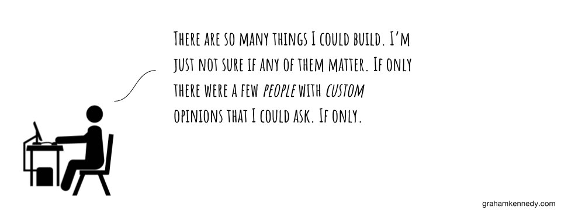
Assumptions and experience are the last resort.
Use at your own risk.
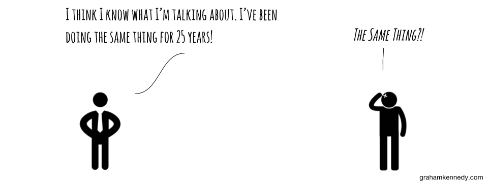
Early on, competition probably doesn't matter that much.
Eventually, however, you'll have to go to war.
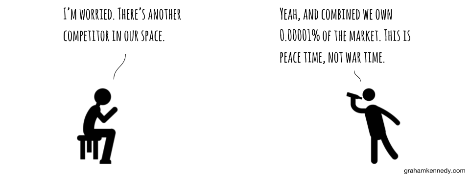
Therefore, the earlier you
hook good fit customers the better.
They will eventually become your strongest advocates.
In reality, though, you are probably
your biggest competitor.
Product managers are
the voice of the customer.
Your job is to tell their story.
Your product's success is measured by your customers' success.
Noisy, but important, lagging indicators like adoption and engagement are not the goal.
Product is the
new Marketing.
And Growth is the
new Product.
You must be able to grow your product.
It must be able to survive on its own before the company puts its entire backing behind it.
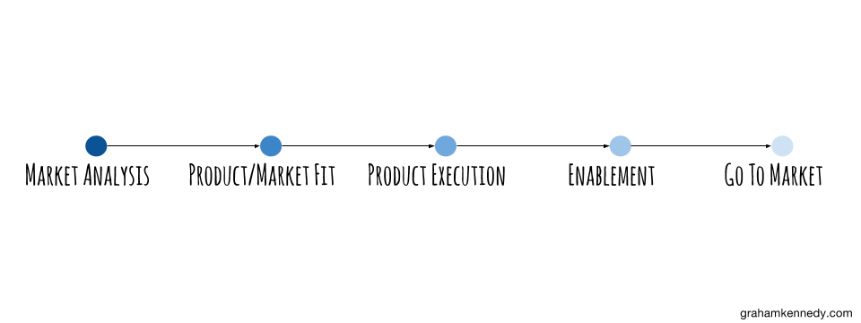
Your product must have a compelling vision,
which means your company must have a compelling vision.
Don't confuse a list of good features with innovation.
Real innovation is simply doing something meaningfully better in a meaningfully better way.
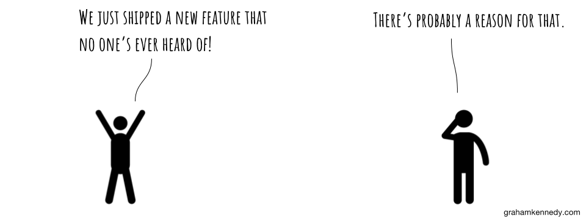
Speed is the byproduct of a strong team, process, and vision.
Speed is not the end goal.
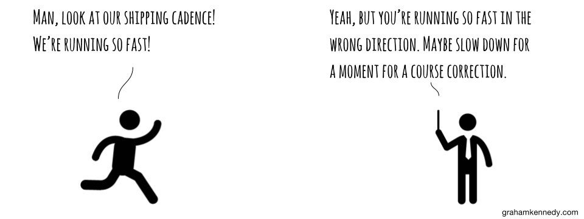
When all you focus on is getting shit done,
then all you're gonna get done is shit.
However, getting your feedback loop
down to 0 is crucial.
And all else being equal, now is better than later.
A Minimal
Viable Product (MVP)
is nothing more than the easiest and fastest way
to validate a worthwhile product assumption.
And don't make your MVP a POS
that you just ship and walk away from.
In the end,
just build something
that matters.
Leaders
over Managers
As a leader, your job
is to make everyone else better.
Everything else is secondary.
A strong leadership culture is the result of
everyone being self-motivated
to make their biggest impact every day.
A great leadership culture is sowed organically,
and not manufactured artifically. #LeadershipIsARoleNotATitle
Teamwork is 1+1=3.
And it can only be achieved when
the team has explicit trust in one another.
Commitment over consensus.
a.k.a. Strong opinions, weakly held
over strong opinions, poorly informed.
Accountability is a mutual agreement on commitments.
Be clear, transparent, and authentic... then be overwhelmed about the awesome trust you've created.
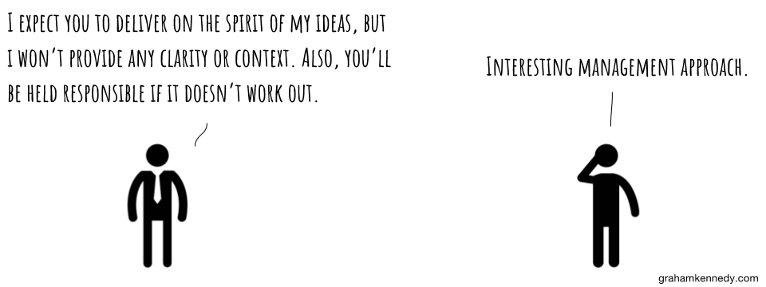
Quality feedback is critical.
#DirectionOverDictationNear real-time feedback corrects feedback in actual real-time.
Daily accountability stand-ups allow for short-term course corrections.
Tactical weekly one-on-ones align managers with employees.
Strategic monthly one-on-ones ensure professional development goals can flourish.
Long-term quarterly peer feedback sessions encourage holistic introspection.
And ask lots
of hard questions.
What's your biggest challenge? What have you failed at lately? How many days last week did you dread coming to work? What will happen if you ignore the bottom 85% of your task list? Are you working on something that matters? Can you defend your roadmap empirically? Who's your customer? Who have you pissed off recently? Have you changed your opinion on something recently?
Oh yeah,
no annual reviews!
As a leader, you only succeed when your team succeeds.
That's why it's so important to avoid hiring 9-to-5ers.
9-to-5ers may actually "work" long hours...
...but they have little interest in improving themselves and their teammates every day...
...and they'll be obsolete in five years.
It's a cutthroat world, man. That's why I seek out owners.
Owners > Contributors > Participants > Observers
#GreaterThanSymbols
Owners have genuine war stories.
#DetailedStoriesOverGenericResumes
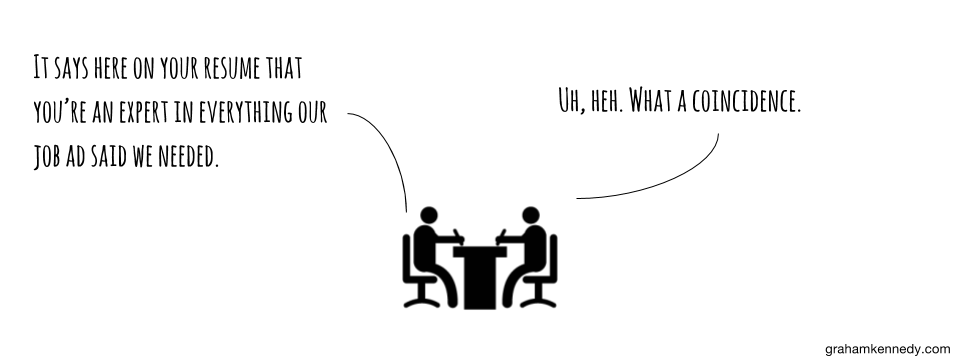Employees don't get fired.
They simply don't get re-hired.
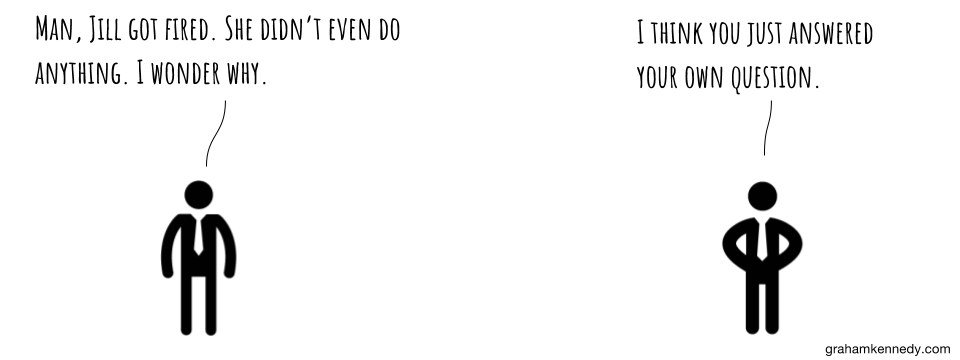
Build an army
of Bitzuists.
And always be the best
at getting better.
See Ya Later
over Goodbye
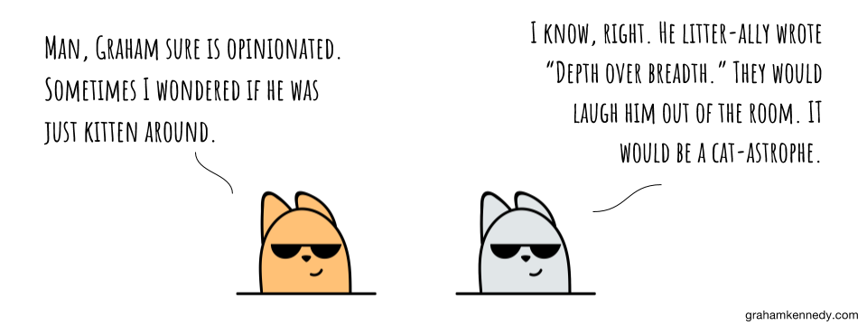